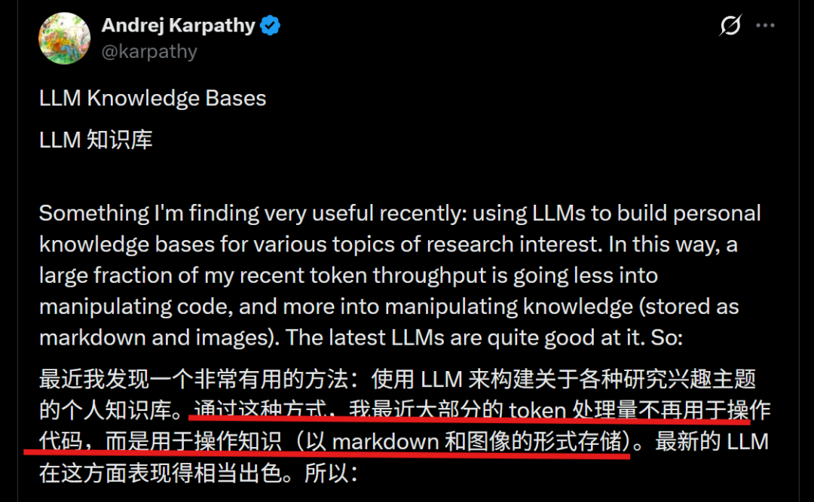
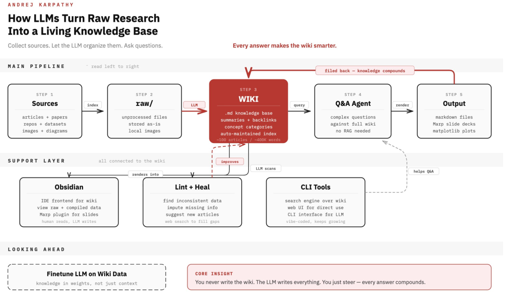
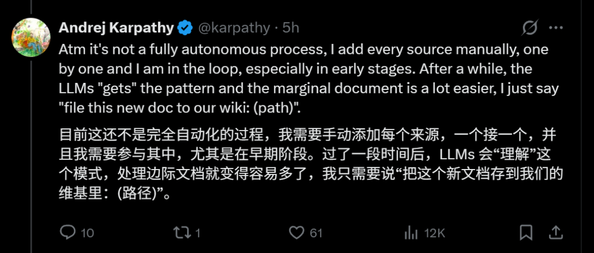
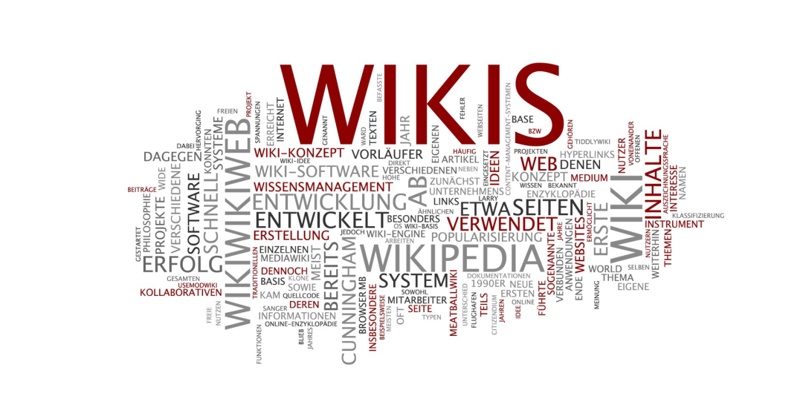
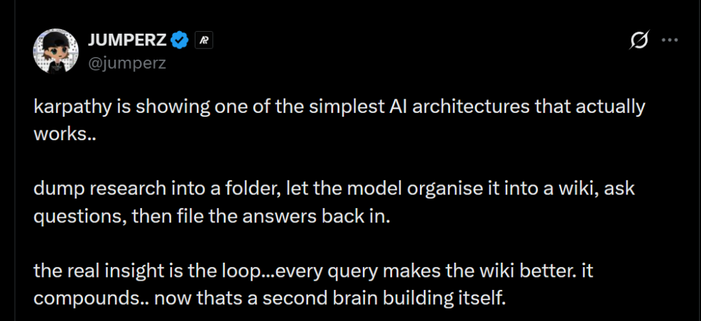
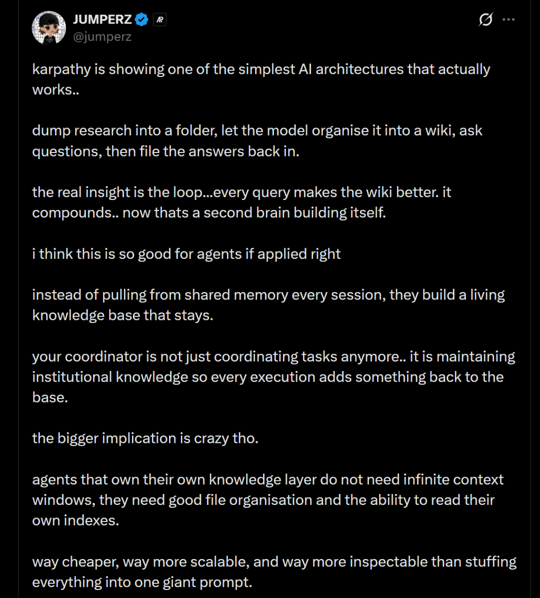

一水 发自 凹非寺
量子位 | 公众号 QbitAI
Karpathy大模型新玩法热乎出炉！
这次是新瓶装老酒——用AI搭建个人知识库。
怎么说呢？能让卡神亲自出手，就注定这个知识库还真和咱想象的不一样。
比如过去最烦的一点——一旦你懒得更新，知识库就废了，在卡神这里却变成了一个“懂得自己更新、还能越用越聪明”的小可爱。
而且还不止于此。
连卡神自己都绷不住，直言现在大部分Token都不是用来写代码，而是拿来跑知识库了。

所以问题来了，卡神的知识库到底有啥不一样？
别急，看完他随手附赠的搭建教程你就明白了。
卡帕西教你这样搭个人知识库
开始之前不得不感慨一句——卡帕西的《个人知识库搭建教程》来得刚刚好。
这两天正愁怎么把四处分散且越积越多的资料，真正沉淀下来。
很多时候都是看完就忘、一找就废——收藏的文章躺在文件夹里吃灰，读过的论文回头就想不起结论，上次踩过的坑下次照样再踩一遍。信息越多，脑子越乱，真正要用的时候，反而什么都翻不到。
说白了，我需要的就是一个能替我记住、替我整理、还能随叫随到的东西。
而卡帕西这次给的，恰恰就是这个。

第一步：导入数据。
虽然用上AI了，但知识库最最基础的准备工作还是免不了——仍需要手动导入原始资料。
不过卡帕西也说了，这项工作只是早期有点累，等后面AI熟悉你的工作风格了，导入的方式也会更简单。
比如你俩熟了后，只需说一句“把这个新文档存到我们的维基里”，甚至直接给个路径，AI就能自动归类、自动打标签、自动关联到相关内容。

具体来说，这一步需要你把所有资料打包进一个文件夹（raw/）——过程中无需人工整理。
然后让大模型帮忙干一件事：
把raw/里乱七八糟的资料，编译成一个井井有条的维基百科。
这个维基百科本质上就是一堆Markdown文件，但内容已经完全不一样了，里面包含：
摘要：每篇文章/论文/代码，模型先读一遍，然后写个简短的摘要； 反向链接：不同内容之间会自动建立反向链接； 概念分类：模型会判断“这篇文章讲的是Transformer”，然后把它归到“深度学习/注意力机制”这个分类下； 新文章：模型甚至会根据已有资料撰写出新的内容。
最终，所有资料汇集在一起，会形成一个互相引用的知识网络（就是你印象当中的那个维基）。

对了，为了将网页和图片也转成Markdown，卡帕西还分享了自己的工具——Obsidian Web Clipper插件。
平时看到好文章的时候，直接点一下插件就能将网页转成.md文件，顺便再把图片一键下载到本地（os：不下载的话，如果哪天网站崩了图也就没了~）。
第二步：前端查看数据。
等AI整理完数据后，我们可以在前端查看原始数据（raw/）、编译好的维基，以及生成的可视化图表。
卡帕西这里用的是Obsidian——它不止可以当浏览面板，还自带一些插件（比如用Marp生成幻灯片）。
而且他还特意提到，维基里的所有数据，基本都是由大模型来编写和维护的，自己几乎从不直接动手修改。
第三步：用起来、跑起来。
一旦数据积累的足够多，且被AI整理得井井有条后，接下来当然是用起来了。
卡帕西分享道，自己最近有项研究的维基攒了100篇文章（约40万字），本以为这个规模得搞一套复杂的RAG（检索增强生成）技术才行。
结果发现：根本不需要。
只要大模型平时把索引文件和摘要维护好了，哪怕40万字的规模，它也能相对轻松地读取所有重要相关数据，然后给出高质量的回答。
而且卡帕西真心夸赞，大模型在自动维护索引和摘要方面“表现相当好”。
以及最重要的一步来了——所有输出结果不是给了就完了，而是被归档到维基中，形成循环。卡帕西表示：
通常，我会把这些输出结果“归档”回维基，为后续查询做准备。
这样一来，我自己的每一次探索和提问，都会在知识库中不断沉淀、持续累积。
划重点，光自己补还不够。为了让整个系统保持更新，卡帕西还补了两层关键能力：
一是专门设计了一层“Lint+Heal”机制，本质上就是让大模型定期扫描整个知识库，自动发现不一致的数据、补全缺失信息，甚至主动建议新增条目，必要时还可以通过外部搜索把空缺补齐。
二是在更底层，提供了一套CLI工具，用来给知识库提供搜索和访问接口——一方面让大模型可以高效检索和读取内容，另一方面也方便人通过命令行或网页直接使用这套知识库。
到这里，整个知识库才真正“活起来”。
你会发现，它和传统知识库已经完全不是一回事了：
过去的知识库，本质是一个需要人不断维护的“存储工具”，而在卡帕西这里，它变成了一个由大模型持续整理、持续更新的“运行系统”——
不是一个单纯的“搜索引擎”，而是可以不断长出新知识的“第二大脑”。
在网友看来，卡帕西正在展示一种真正有效的、最简单的AI架构：
将研究资料存入文件夹，让模型将其组织成维基，提出问题，然后将答案存回。
真正的洞见在于这个循环……每个查询都让维基变得更好。它不断积累，现在这就像一个自我构建的第二大脑。

这下不用卷上下文了？
而一旦有了这样的知识库，人们会突然发现：
好像也不需要再一味拼命卷上下文窗口了？
过去大家卷上下文，是因为AI老是容易“说着说着就忘了以前的内容”，越到后面越驴唇不对马嘴。
核心症结就一个——记忆问题。
但是现在，情况变了。
原本需要一次性塞进上下文的资料，被沉淀进了个人知识库里，模型不再强行记忆，而是按需读取、按需使用。
于是整个逻辑彻底反过来了：
你每次提供的信息不再是“临时的”，而是在知识库里“长期存储”；每一次用也不是纯消耗，而是在给知识库不断补充新知识。
对模型来说，它也不需要时刻记住一切，而是只需要知道“什么东西在哪里”。
本质上，这其实是从“让模型记住”，变成了“让系统可查找”。
而这一转变，按网友的话来说，其影响在智能体时代将更加“疯狂”。
我认为如果正确应用（卡帕西的这种个人知识库），这对智能体来说非常好。
不再是每轮对话都从共享内存中临时提取信息，而是构建一个持续存在的、有生命力的知识库。
你的协调者（Agent）不再只是协调任务……它还在维护机构化的知识，这样每一次执行都会为知识库增添一些东西。
更大的影响是疯狂的。
拥有自己知识层的Agent，并不需要无限的上下文窗口——它们只需要良好的文件组织能力，以及读取自己索引的能力。
这比把所有东西都塞进一个巨大的提示词里，更便宜、扩展性更强、也更容易检查和理解。

参考链接：
[1]https://x.com/karpathy/status/2039805659525644595
[2]https://x.com/jumperz/status/2039826228224430323
一键三连「点赞」「转发」「小心心」
欢迎在评论区留下你的想法！
— 完 —
🔹 谁会代表2026年的AI？
龙虾爆火，带动一波Agent与衍生产品浪潮。
但真正值得长期关注的AI公司和产品，或许不止于此。
如果你正在做，或见证着这些变化，欢迎申报。
让更多人看见你。👉 https://wj.qq.com/s2/25829730/09xz/